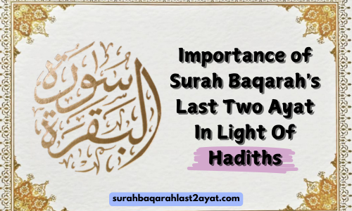

Importance of Surah Baqarah's Last Two Ayat In Light of Hadiths (With References)
Opening Note
All the Quranic Surahs are of great importantance with good (Khair) in them. However, some Surahs and their ayats have special benefits and virtues that we know some of, while Allah the wise knows them all. The last 2 ayat of Surah Baqarah are also special among all of them.
In this short article, we will cover the importance of Surah Baqarah's last two Ayat in light of Hadiths. Before moving towards the hadiths, it's important to understand the meaning of these final two ayats.
Surah Baqarah
(2:285-286) states:
The Messenger believes in what has been sent down to him from his Lord, and (so do) the
believers. Each
one believes in Allah, His Angels, His Books, and His Messengers. (They say,) "We make
no distinction
between one another of His Messengers, (and they say) We hear, and we obey. (We seek)
Your forgiveness,
our Lord, and to You is the return (of all)."
Allah burdens not a person beyond his scope. He gets reward for that (good) he has earned, and he is punished for that (evil) he has earned. "Our Lord! Punish us not if we forget or fall into error, our Lord! Lay not on us a burden like that which You did lay on those before us (Jews and Christians); our Lord! Put not on us a burden greater than we have strength to bear. Pardon us and grant us forgiveness. Have mercy on us. You are our Mawla (Patron, Supporter, and Protector) and give us victory over the disbelieving people."
Importance in Light of Hadiths
Below are some important Hadiths that describe the importance of Surah Baqarah.
It was narrated from Abu Mas'ud that the Prophet Muhammad (PBUH) said:
- "Whoever recites the last two ayats of Surat Al-Baqarah at night, that will be sufficient for him." (Sunan Ibn Majah 1369)
An-Nu'mān bin Basheer reported that the Prophet ﷺ said:
- "Allah inscribed a book two thousand years before He created the heavens and the earth, from which the last two ayats of Sūrat al-Baqarah were revealed. If they are recited for three nights in a home, no devil will come near it." (Jami` at-Tirmidhi 2882)
Narrated by Hazrat 'Aishah:
- "When the last ayats of Surat al-Baqarah were revealed, the Messenger of Allah (ﷺ) came out and recited them to us and said, Trading in wine has been forbidden." (Sunan Abi Dawud 3490)
In another narration from narration from Abu Mas`ud al-Ansari:
- "The Prophet (ﷺ) said, "If one recites the last two ayats of Surat al-Baqarah at night, it is sufficient for him (for that night)." (Sahih al-Bukhari 5040)
Abu Ishaq reported that Ali, may Allah be pleased with him, said:
- "I did not think that any reasonable person could sleep without reciting the last ayats of Sūrat al-Baqarah, and they are indeed treasures from beneath the throne." (Sunan al-Dārimī 3289)
It was narrated that Ibn Abbas said:
- "When Jibril was with the Messenger of Allah (ﷺ), he heard a sound from above like a
door opening. Jibril, peace be upon him, looked up toward the sky and said: 'This is
a gate in heaven that has been opened, but it was never opened before."
He said: "An Angel came down from it and came to the Prophet (ﷺ) and said, 'Receive the glad tidings of two lights that have been given to you and were never given to any prophet before you: the opening of the book (Al-Fatihah) and the last ayats of Surat Al-Baqarah. You will never recite a single letter of them, but you will be granted it. (Sunan an-Nasa'i 912)
Reflection
Above are some important hadiths regarding Surah Baqarah with their references. You can understand the significance of this surah by examining these hadiths. Find out more about the benefits and virtues of the last two ayats in this article.